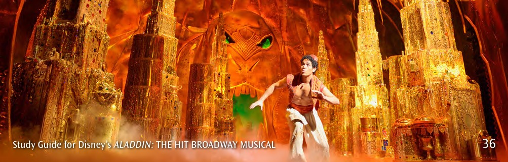
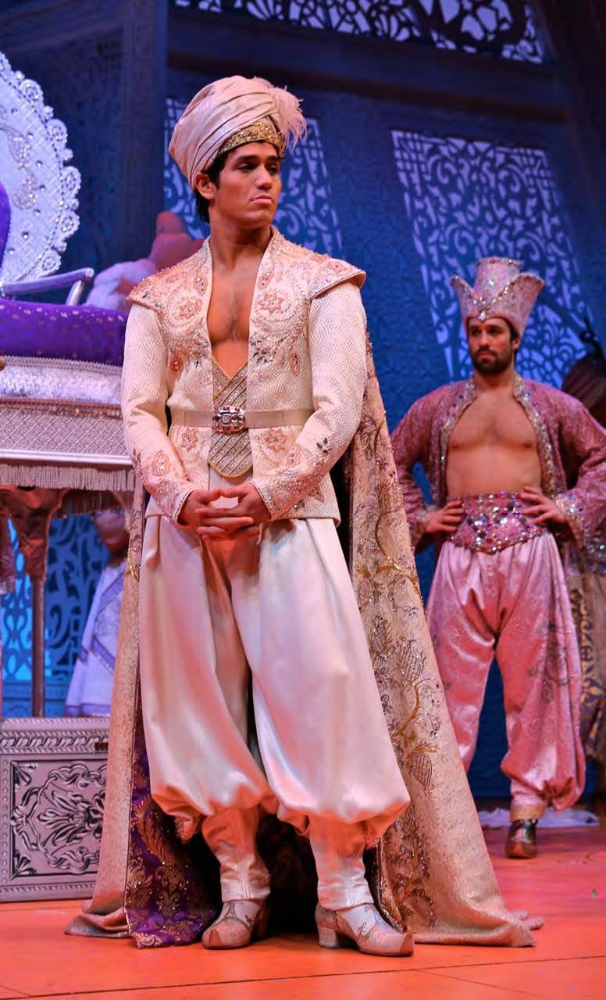
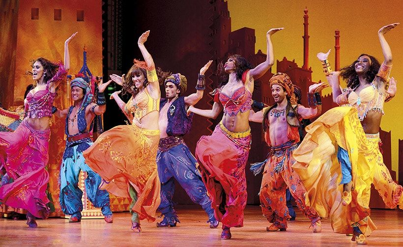

Taller Montaje de Teatro Musical
Calendario y próximo ensayo
Todas las escenas del guion
Avance de escenas y canciones
Videos de referencia
Arquetipo y notas de actuación
Mapa de blocking por canción



Fotos de vestuario y escenografía